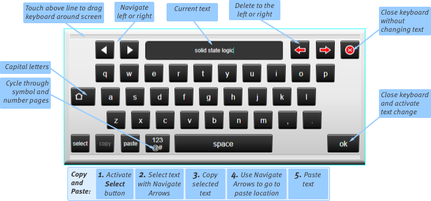
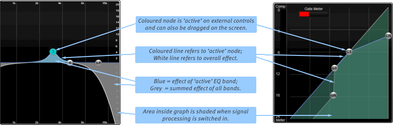

On Screen Buttons
Each button on screen is labelled with its function. Press the button to activate or deactivate the function. Drag your finger off the button before releasing if you wish to cancel the operation. The button will illuminate when the function is activated.
| A timer symbol in the top right corner of a button indicates press & hold to activate. Keep holding the button down until it flashes then release to activate the function. Drag your finger off the button if you wish to cancel the operation. The hold time is adjustable in Console Options (MENU > Setup > Options > CONSOLE tab). | |
| A timer & arrow symbol in the top right corner of a button indicates both a press function and a hold function. A secondary menu appears when held instead of pressed. |
Keyboard
When a name or number can be typed, a keyboard appears on screen. See image for usage principles:
Tip: You may attach a USB keyboard with number pad for even faster typing access.

Note: Press the shift arrow on left of the keyboard for capital letters. Double-tap the shift key to latch caps lock.
Double-tapping on a text or a numerical field on the display will call up the keyboard.
Within channel or scene names, the Next and Prev buttons (not pictured above; tab and shift+tab respectively if using a USB keyboard) allow quick navigation through paths or scenes.
Note: Next and Prev will move through paths in the order in which they appear in the Console Configuration and Overview screen; not in the order in which they appear on the Fader Tiles or Channel View screen.
Signal Processing Graphs
Main screen EQ and dynamics graphs display as follows:

Note: In the main screen detail view, touch any node on the graph and use the on-screen encoders to the right of the graph area to control one parameter at a time.
Double-tap the text box in the bottom right of the detail view to enter a specific value for the selected parameter.